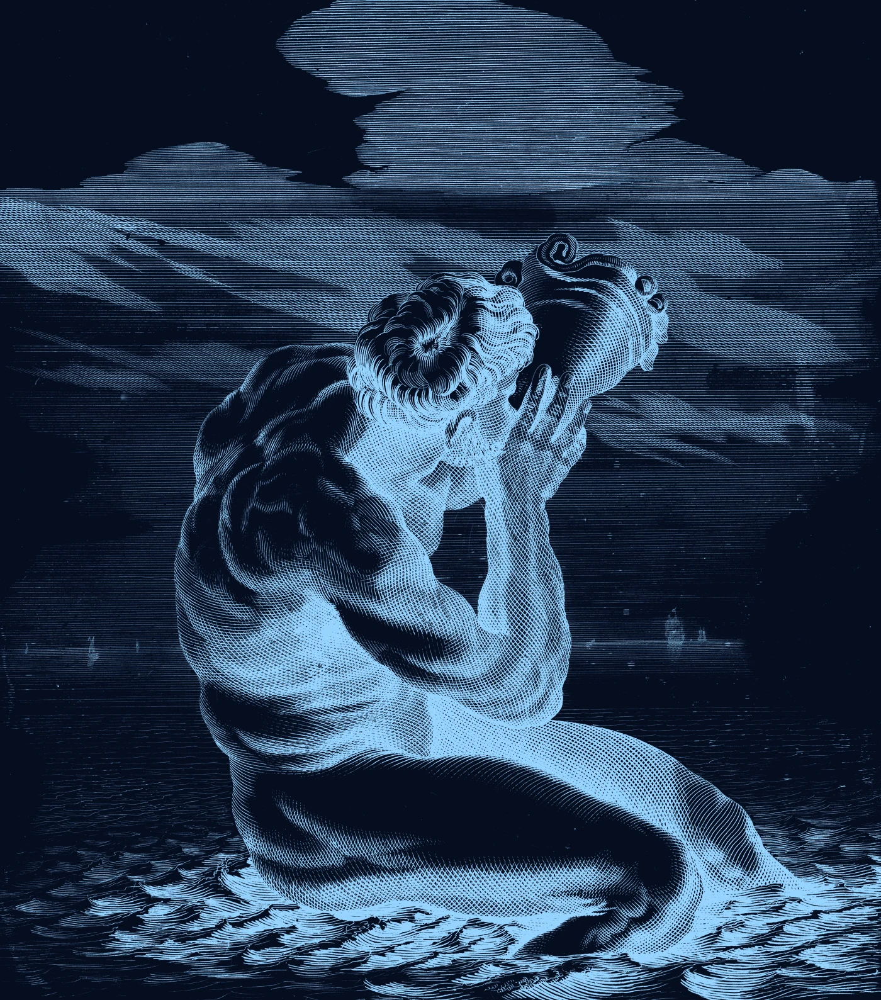
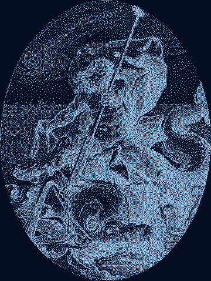

[task name]
Holding position in a current
[How the ROV deals with it — e.g. depth and heading hold in software, thruster layout]
Student ROV company competing in the MATE ROV Competition.

The Oceanids are the three thousand daughters of Oceanus and Tethys, each guarding her own stretch of water. We are [number] students from [school name] building ROVs that do useful work under water.


| Class | [Ranger / Pioneer / Explorer] |
|---|---|
| Mass in air | [ ] kg |
| Size (L × W × H) | [ ] × [ ] × [ ] mm |
| Thrusters | [ ] × [model] |
| Frame | [material] |
| Power | [ ] V DC, [ ] A max |
| Tether length | [ ] m |
| Cameras | [ ] |
| Tools | [gripper, sensors …] |
| Build cost | [ ] USD |
[task name]
[How the ROV deals with it — e.g. depth and heading hold in software, thruster layout]
[task name]
[How the ROV deals with it — e.g. camera placement, lighting, on-screen overlays]
[task name]
[How the ROV deals with it — e.g. gripper design, force limits]
Chief Executive Officer
[Name]
Chief Financial Officer
[Name]
Safety Officer
[Name]
Mechanical Lead
[Name]
Electrical Lead
[Name]
Software Lead
[Name]
Pilot
[Name]
Mentor
[Name]